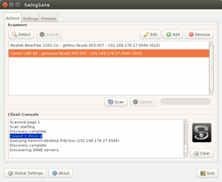
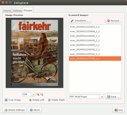

SwingSane
Dieser Artikel wurde für die folgenden Ubuntu-Versionen getestet:
Ubuntu 16.04 Xenial Xerus
Ubuntu 14.04 Trusty Tahr
Zum Verständnis dieses Artikels sind folgende Seiten hilfreich:
 SwingSane
SwingSane  ist eine in Swing ausgeführte grafische Oberfläche für SANE, mit der plattformübergreifend unter Linux, Windows oder OS SANE-fähige Scanner im Netzwerk verwendet werden können. Besonderen Wert legt der Entwickler auf die Fähigkeit, alle in den Backends möglichen Scanneroptionen nutzen zu können, die unter Programmen wie Simple Scan oder Xsane ggf. nicht, oder nur eingeschränkt, nutzbar sind. In SwingSane lassen sich Profile für unterschiedliche Scan-Aufgaben und verschiedene Scanner festlegen. Die Programmoberfläche ist englisch, und leider nicht sonderlich "bedienerfreundlich". Das Programm arbeitet am reibungslosesten mit Epson-Scannern, für die es entwickelt worden ist. Leider scheint der Entwickler des noch jungen Projektes (die aktuelle Version 0.2 erschien im Februar 2015) nur noch wenig Interesse an der Weiterentwicklung zu haben (siehe diese Antwort im SwingSane-Forum).
ist eine in Swing ausgeführte grafische Oberfläche für SANE, mit der plattformübergreifend unter Linux, Windows oder OS SANE-fähige Scanner im Netzwerk verwendet werden können. Besonderen Wert legt der Entwickler auf die Fähigkeit, alle in den Backends möglichen Scanneroptionen nutzen zu können, die unter Programmen wie Simple Scan oder Xsane ggf. nicht, oder nur eingeschränkt, nutzbar sind. In SwingSane lassen sich Profile für unterschiedliche Scan-Aufgaben und verschiedene Scanner festlegen. Die Programmoberfläche ist englisch, und leider nicht sonderlich "bedienerfreundlich". Das Programm arbeitet am reibungslosesten mit Epson-Scannern, für die es entwickelt worden ist. Leider scheint der Entwickler des noch jungen Projektes (die aktuelle Version 0.2 erschien im Februar 2015) nur noch wenig Interesse an der Weiterentwicklung zu haben (siehe diese Antwort im SwingSane-Forum).
Installation¶
Voraussetzung ist eine funktionsfähige Java[1]-Installation, getestet mit openjdk-7 (auf Ubuntu 14.04) bzw. openjdk-8 (auf Ubuntu 16.04). Das Programm selbst ist nicht in den offiziellen Ubuntu-Quellen vorhanden, ein .deb-Paket ist auf der Downloadseite  verfügbar, das installiert[2] werden muss. Dabei werden als Abhängigkeiten die Pakete default-jre und default-jre-headless installiert, die auf die standardmäßig verwendete Java-Installation verweisen.
verfügbar, das installiert[2] werden muss. Dabei werden als Abhängigkeiten die Pakete default-jre und default-jre-headless installiert, die auf die standardmäßig verwendete Java-Installation verweisen.
Alternative kann auch die Java-Datei ohne Installation verwendet werden, dazu die .zip-Datei herunterladen, entpacken[3] und im entsprechenden Verzeichnis[4] mit
java -jar swingsane-0.2.jar
das Programm aufrufen.
Hinweis!
Fremdsoftware kann das System gefährden.
Außerdem muss zur Nutzung - auch auf einem Einzelrechner! - eine funktionsfähige SANE-Daemon-Konfiguration vorhanden sein, da SwingSane nur über das Netzwerk auf Scanner zugreifen kann. Ein Einzelrechner muss also sowohl als Server als auch als Client eingerichtet werden.
Netzwerkscanner finden¶

Nach dem Start[5] müssen zunächst vorhandene Netzwerkscanner gesucht werden.
Unter Ubuntu 14.04¶
Bei ordnungsgemäß konfiguriertem SANE-Deamon wird die Suche über die Schaltfläche "Detect" im Hauptfenster gestartet, in der "Client Console" (dem Fenster unten) wird der Fortschritt dokumentiert. Bei gefundenem Scanner erscheint in der Liste eine blau unterlegte Erfolgsmeldung, wenig später öffnet sich ein Pop-Up-Fenster, in dem die Aufnahme des gefundenen Scanners bestätigt werden muss.
Unter Ubuntu 16.04¶
Da saned unter Ubuntu 16.04, das systemd verwendet, nicht mehr explizit gestartet werden kann (siehe auch "Bug"-Report), können Scanner nur "manuell" gefunden werden. Dazu muss die Adresse des Servers, an dem Scanner angeschlossen sind, bekannt sein. Im Hauptfenster die Schaltfläche "Add" anklicken, und dort im sich öffnenden Fenster in der zweiten Zeile ("Remote Adress") die IP-Adresse angeben, ggf. auch einfach localhost, wenn der Scanner am eigenen Rechner hängt, und saned entsprechend konfiguriert ist. Die darunter angegebene Portnummer 6566 muss im Normalfall nicht geändert werden, es ist der Standard-SANE-Port.
Clientnutzung unter Windows¶
Unter Windows 7 und 10 lässt sich das Programm ohne Probleme installieren; die Nutzung entspricht vollständig der unter Ubuntu, nur dass beim Abspeichern keine Name vergeben werden kann, sondern die Temporär-Namen der Scans verwendet wird. Das Auffinden der Netzwerkscanner entspricht den oben beschriebenen Verfahren je nach verwendeter Ubuntu-Version auf dem Server.
Konfiguration¶
Theoretisch können dann die gefundene Scanner direkt verwendet werden, indem man sie auswählt und dann die "Scan"-Schaltfläche betätigt. Im Reiter "Settings" sind allerdings meist nur wenige Optionen direkt auswählbar, etliche sind "ausgegraut" (abhängig vom verwendeten Backend).
Meist empfiehlt es sich daher, die Option "Use custom settings" (benutzerdefinierte Einstellungen verwenden) zu aktivieren, und dann mit der Schaltfläche "Custom settings..." ein Fenster mit allen verfügbaren Optionen zu öffnen. Mit "Check options" werden die tatsächlich vom Scanner unterstützten Optionen angezeigt; nicht alle von einem Backend bereitgestellten Optionen sind jedem Scanner tatsächlich verwendbar. Die als "Activ" (zweite Spalte "Status") gekennzeichneten Option lassen sich meist auch verwenden. In der "Modify"-Spalte lassen sich die Optionen aktivieren, oder ihnen bestimmte Werte zuweisen. Wenn der Mauszeiger über einem Eintrag steht, wird ein Tooltip mit Informationen zu der jeweiligen Option eingeblendet.
Mehrere Profile erstellen¶
Eigene Profile mit speziellen Einstellungen lassen sich erstellen, indem man über Schaltfläche "Add" einen neuen Scanner anlegt und ihm mit einen aussagekräftigen Namen belegt. In den "Settings" dann die gewünschten Optionen festlegt, und abspeichert.
Experten-Info:
Wer genauere Informationen benötigt, kann über die Schaltfläche "Export" die Backend-Daten als Scanner.xml-Datei abspeichern. In einem Editor[6] lassen sich dann die tatsächlich möglichen Einträge zu den jeweiligen Optionen finden (z.B. welche Auflösungen der Scanner tatsächlich unterstützt). Diese Angaben kann man alternativ auch im Terminal[4] über den Befehl scanimage -h -d DEVICE auslesen.
Global Settings¶
Unter "Global Settings" lassen sich Einstellungen zur Freigabe einzelner Scanner treffen; nötig, wenn beispielsweise die Verwendung des Scanservers mit einem Passwort abgesichert ist. SwingSane kann nicht auf eine pass-Datei zugreifen. Über "Add" wird ein Konfigurationsfenster geöffnet, in dem die Angaben zum Gerät ("Resource", hier nur das verwendete Backend verwenden!), dem Benutzer ("Username") und das Passwort eingetragen und gespeichert werden. Über "Edit" lassen sich später Benutzername und Passwort verändern, Angaben zum Gerät allerdings nicht; in dem Fall kann man nur den Eintrag löschen ("Remove") und dann einen neuen erstellen. Außerdem können Angaben zum Multicast-DNS-Server gemacht werden, im Normalfall sollte der Eintrag nicht geändert werden, es sei denn, man weiß was man tut... Wohlweislich lässt sich die Standardeinstellung schnell weder herstellen ("Restore Default").
Bedienung¶

Mit "Scan" wird der Scanprozess entsprechend der Einstellungen gestartet, in der "Client Console" erscheinen dann kurze Hinweise. Die Scans werden unter dem in den "Settings" eingegebenem Namen (Standard ist "scan_TIMESTAMP_PAGENUMBER_PAGECOUNT", also etwas wie "scan_20160521154823_1_2") temporär abgelegt. Im Reiter "Preview" werden sie im rechten Fenster aufgelistet, und können nachbearbeitet werden, Drehung ("Rotate Left/Rotate Right") und Zuschnitt ("Crop") direkt im Hauptfenster. Es besteht außerdem die Möglichkeit, die Anzeigegröße über das Dropdown-Menü oder das Mausrad  zu verändern, leider nicht stufenlos.
zu verändern, leider nicht stufenlos.
Die Zuschnittfunktion scheint allerdings nicht ganz ausgereift zu sein. Das sich öffnende Fenster nimmt standardmäßig die gesamte Bildschirmbreite ein. Querformate werden so meist vollständig angezeigt, bei Hochformaten ist aber nur ein Ausschnitt in der Mitte des Scans sichtbar. Eigentlich lässt sich der Zuschnitt über ein Positionieren des Mauscursors an der gewünschten oberen linken Ecke und Ziehen bei gedrückter  realisieren. Da in dem Modus keine direkte Änderung der Darstellungsgröße möglich ist, kann nur der sichtbare Teil mit der Maus ausgewählt werden, und der zudem auch noch "blind", da auch die Auswahl ggf. nicht sichtbar wird. Theoretisch kann auch über die Angabe der oberen linken Ecke ("X/Y"-Werte) und die Breite und Höhe ("Width/Height") in Pixeln der Zuschnitt bestimmt werden, was aber ebenfalls nur "blind" erfolgen kann, und wer weiß schon, wie viele Pixel nötig sind. Erst wenn man das gesamte Fenster auch in eine "Hochformat" bringt, und dabei das Fenster so schmal wie möglich macht, lässt sich ein Zuschnitt per Maus einigermaßen bewerkstelligen, allerdings bleiben ggf. Randbereiche weiterhin unsichtbar. Im Querformat funktioniert ein Aufziehen des gewünschten Bereiches mit der Maus hingegen besser. Die mit der Maus getroffene Auswahl wird dann auch in transparentem Blau angezeigt, und kann über die unteren Einstellungen ggf. noch korrigiert werden.
realisieren. Da in dem Modus keine direkte Änderung der Darstellungsgröße möglich ist, kann nur der sichtbare Teil mit der Maus ausgewählt werden, und der zudem auch noch "blind", da auch die Auswahl ggf. nicht sichtbar wird. Theoretisch kann auch über die Angabe der oberen linken Ecke ("X/Y"-Werte) und die Breite und Höhe ("Width/Height") in Pixeln der Zuschnitt bestimmt werden, was aber ebenfalls nur "blind" erfolgen kann, und wer weiß schon, wie viele Pixel nötig sind. Erst wenn man das gesamte Fenster auch in eine "Hochformat" bringt, und dabei das Fenster so schmal wie möglich macht, lässt sich ein Zuschnitt per Maus einigermaßen bewerkstelligen, allerdings bleiben ggf. Randbereiche weiterhin unsichtbar. Im Querformat funktioniert ein Aufziehen des gewünschten Bereiches mit der Maus hingegen besser. Die mit der Maus getroffene Auswahl wird dann auch in transparentem Blau angezeigt, und kann über die unteren Einstellungen ggf. noch korrigiert werden.
Für die X/Y-Koordinaten lassen leider auch negative Werte angeben, die das Programm zwar zunächst zulässt, dann aber mit einer Fehlermeldung quittiert. Zudem ist die Verwendung von Werten, die die tatsächliche Breite/Höhe überschreiten, möglich, ohne dass auf diesen Fehler hingewiesen wird. Eine einmal erstellt Auswahl kann mit gedrückter auch verschoben werden, allerdings gilt auch hier, dass die Auswahl aus dem tatsächlich möglichen Bereich herausgeschoben werden kann.
Über die Schaltfläche "Transform..." sind die Optionen "Deskew" (Geradeziehen), "Binarize" (in S/W umformen), sowie "Crop" und "Rotate" nochmals zu finden. Die Bedienung ist etwas mühsam, da die jeweilige Option zunächst im Dropdown-Menü markiert und mit "Add Transformation" ausgewählt werden muss. Daraufhin kann, nachdem sie im Auswahlfenster oben markiert worden ist, dazu im dann unten erscheinendem Optionenfeld eine Angabe gemacht werden. Für "Deskew" ist das die Gradzahl, ab der eine Schräglage korrigiert werden soll, bei "Binarize" kann ein Schwellwert angegeben werden, ab der ein Pixel Schwarz oder Weiß dargestellt wird, bei "Rotate" kann im Dropdown-Menü eine Drehung im Uhrzeigersinn ("CW") von 90, 180 oder 270 Grad angegeben werden. Für "Crop" steht nur die Angabe der X/Y-Koordinaten, sowie der Breite und Höhe in Pixeln zur Verfügung, das Aufziehen des Bereiches mit der Maus ist nicht möglich. Über "Transform" können dann alle markierten Scans in einem Rutsch mit den gleichen Parametern bearbeitet werden, die Auswahl der Scans muss allerdings vor Aufruf des Transformations-Menüs erfolgen.
Ein Rückgängigmachen dieser Änderungen (bis auf die Drehungen) ist nicht möglich.
Abgespeichert werden können die Ergebnisse im .png- oder .pdf-Format, letzteres auch als mehrseitiges PDF (Dropdown-Menü unterhalb der Scan-Liste). Eine Korrektur der Reihenfolge der Scans ist leider nicht möglich.
Mit "Save" werden die Ergebnisse gespeichert, eine Standardpfad ist nicht angebbar, was dazu führt, dass die Scans zunächst in dem Verzeichnis abgelegt werden sollen, in dem sich die .jar-Datei der Software befindet. Bei Installation über das .deb-Paket also in /usr/bin, was allerdings dem Standardbenutzer wg. mangelnder Rechte nicht möglich ist. Ein Abbruch des Speichervorgang führt erstaunlicherweise ebenfalls zu einer Fehlermeldung, "Failure Saving: java.io.FileNotFoundException: /usr/bin/null/null (Datei oder Verzeichnis nicht gefunden)".
Probleme und Lösungen¶
Wenn in den Einstellungen kein Name für die Temporärdateien ("Batch Prefix") eingetragen ist/werden kann, scannt der Scanner dieselbe Seite solange, bis er manuell gestoppt wird ("Cancel"). Die Scans haben dann keinen Namen, im "Preview"-Reiter sind sie in der Liste zunächst nicht zu erkennen, eine "Markierung" erscheint erst, wenn man mit der Maus in die Liste geht. Eine Lösung besteht darin, zunächst einen anderen Scanner aufzurufen, und dann zum ersten zurückzukehren, dann kann meist ein Name eingegeben werden. Ggf. hilft auch eine Neustart des Programms.
Die Option "preview" (Vorschau) führt (zumindest im beim genesys-Backend) zu einem Aufhängen, das Scannen scheint nicht beendet werden zu können. Es muss dann abgebrochen werden, ggf. ist sogar ein Rechnerneustart nötig, um wieder auf den Scanner zugreifen zu können.
Alternativen¶
XSane - weiterhin die umfassenste Scanner-Software unter Linux
pct-scanner-script - hochkonfigurierbare Kommandozeilen-Lösung zum Scannen und Erstellen von PDF/DjVu-Dateien
gscan2pdf - Programm mit relativ gutem Zugriff auf Sane-Backend-Optionen
- Erstellt mit Inyoka
-
 2004 – 2017 ubuntuusers.de • Einige Rechte vorbehalten
2004 – 2017 ubuntuusers.de • Einige Rechte vorbehalten
Lizenz • Kontakt • Datenschutz • Impressum • Serverstatus -
Serverhousing gespendet von